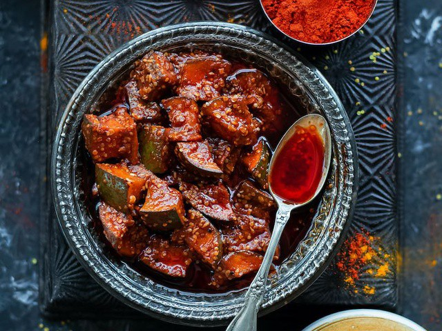

કેરીનું અથાણું |

|
|
▢100 ગ્રામ મેથી
▢લાલ મરચું પાવડર
▢મીઠું સ્વાદ અનુસાર
▢50 ગ્રામ કલોજી
▢100 ગ્રામ વરિયાળી
▢50 ગ્રામ હળદર
▢દોઢ લીટર સરસવનું તેલ
|
|
કેરીનું અથાણું કરવા માટે સૌથી પહેલા કેરીને સરખા ભાગમાં કાપી સૂકવી લો.
સ્ટેપ2:
એક બાઉલમાં તેલ લેવું અને તેમાં બધા મસાલા નાખીને બરાબર મિક્ષ કરી લો.
સ્ટેપ3:
હવે બરણીમાં થોડો મસાલો છાંટો. હવે આ મિશ્રણમાં કેરીના ટુકડાને સારી રીતે મિક્સ કરીને બરણીમાં ભરી લો.
સ્ટેપ4:
તેને સારી રીતે મિક્સ કરો. હવે અથાણા પર બાકીના મસાલાનું મિશ્રણ અને તેલ ભરી દો.
સ્ટેપ5:
આ બરણીને એક અઠવાડિયા સુધી તડકામાં રાખો.
સ્ટેપ6:
- અથાણું નાખતી વખતે એ વાતનું ધ્યાન રાખો કે જે વાસણમાં અથાણું કરવાનું છે તે સંપૂર્ણપણે સૂકું હોવું જોઈએ.
સ્ટેપ7:
આ સાથે અથાણાં માટે માત્ર કાચા તેલનો જ ઉપયોગ કરો. જો તમે ઘરે બનાવેલા મસાલાનો ઉપયોગ કરશો તો તે વધુ સારું રહેશે.